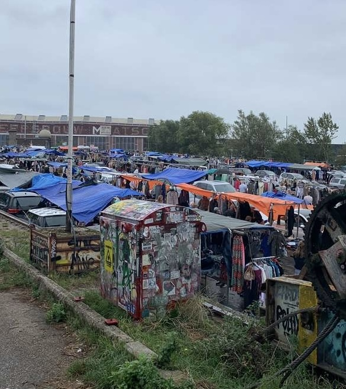

markten
IJ hallen
IJ-hallen is de grootste en een van de drukste vlooienmarkten van Europa gelegen op het NSDM terrein van Amsterdam. Door de grootte van de markt is de kans van slagen zeer groot. Je vind hier unieke producten op het gebied van woninginrichting en kleding. Een aanrader voor de ijhallen is wel vroeg in de dag gaan, want het kan erg druk worden.
Waterlooplein
Waterlooplein is met 133 jaar de oudste vlooienmarkt van Nederland, deze markt is 6 dagen per week geopend en biedt ongeveer 300 verschillende kramen aan. Van vintage fototoestellen tot sieraden en kleding voor weinig geld. Op waterlooplein vind je tovallig ook een van de winkels van kilostore waar ik het eerder over had.
Albert Cuyp
De Albert Cuypmarkt is een bekende markt in Amsterdam, gelegen in de wijk De Pijp. Deze markt is vernoemd naar de schilder Albert Cuyp en staat bekend om zijn diverse aanbod van producten, waaronder verse voedingsmiddelen, kleding, bloemen, en andere goederen. De markt is dagelijks geopend, behalve op zondag. Het is een populaire bestemming zowel voor de lokale bevolking als toeristen. Op waterlooplein vind je tovallig ook een van de winkels van kilostore waar ik het eerder over had.